这份文件是辅助证据；下面的按钮才是能点击、记录、拖动和切换页面的本地网站。网页与 Tauri App 共用新界面，只有系统窗口能力不同。
打开本地可交互版 →仅在这台电脑上运行。若地址暂时打不开，在项目目录执行 npm run preview:local。数据保存在这个地址所属的浏览器空间，与原网站和已安装 App 相互独立；没有覆盖旧记录，也没有发布线上版本。
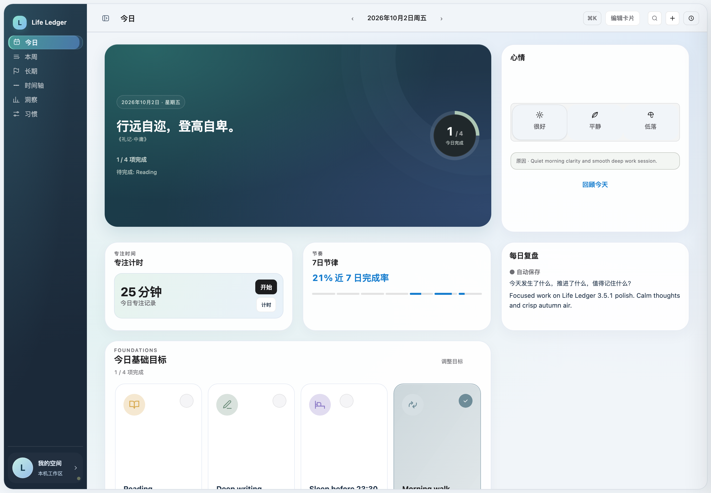
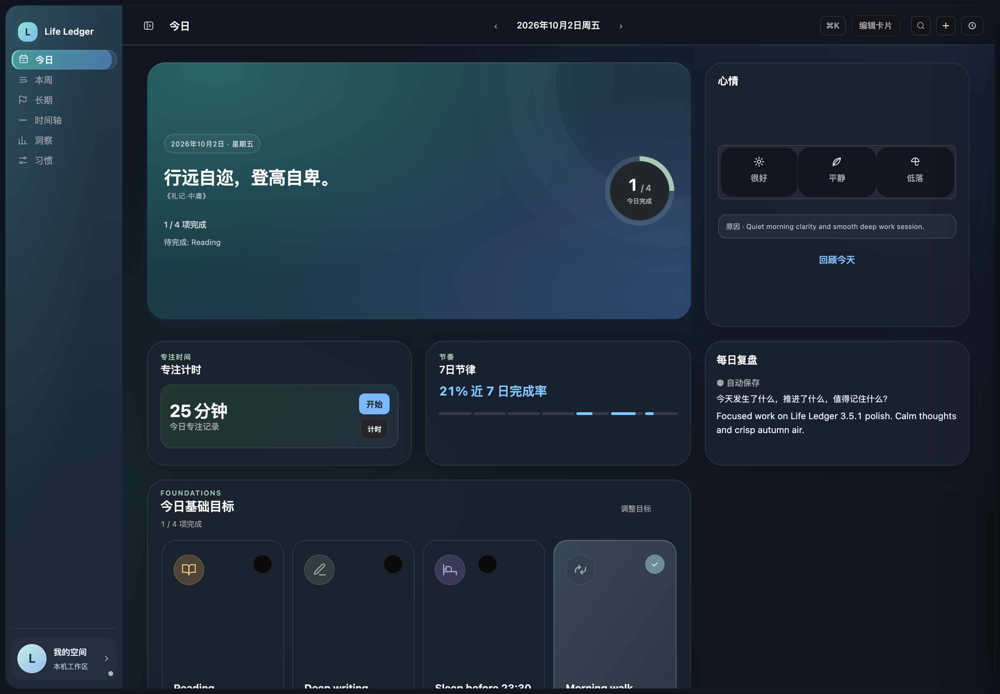
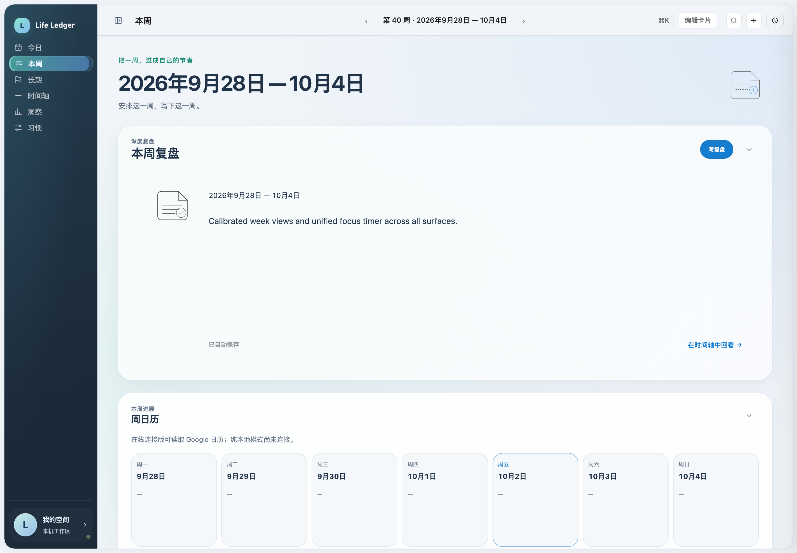
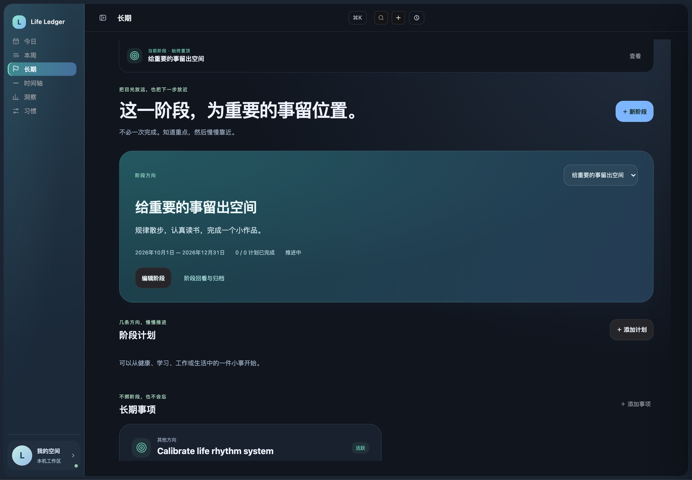
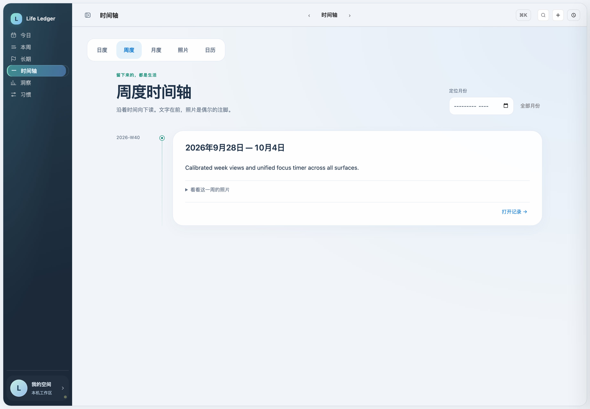
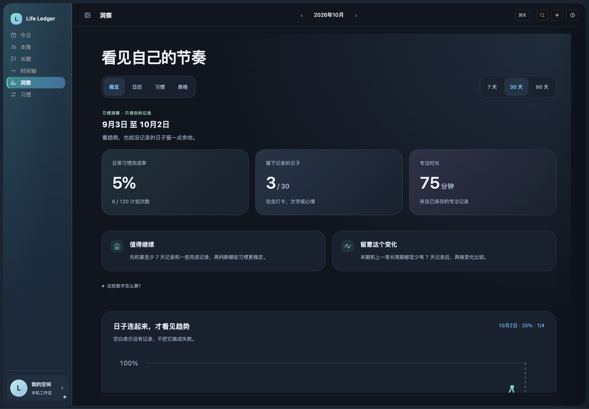
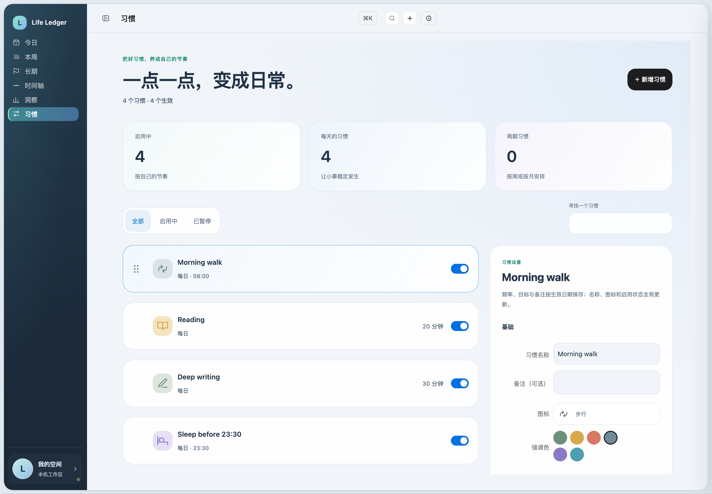
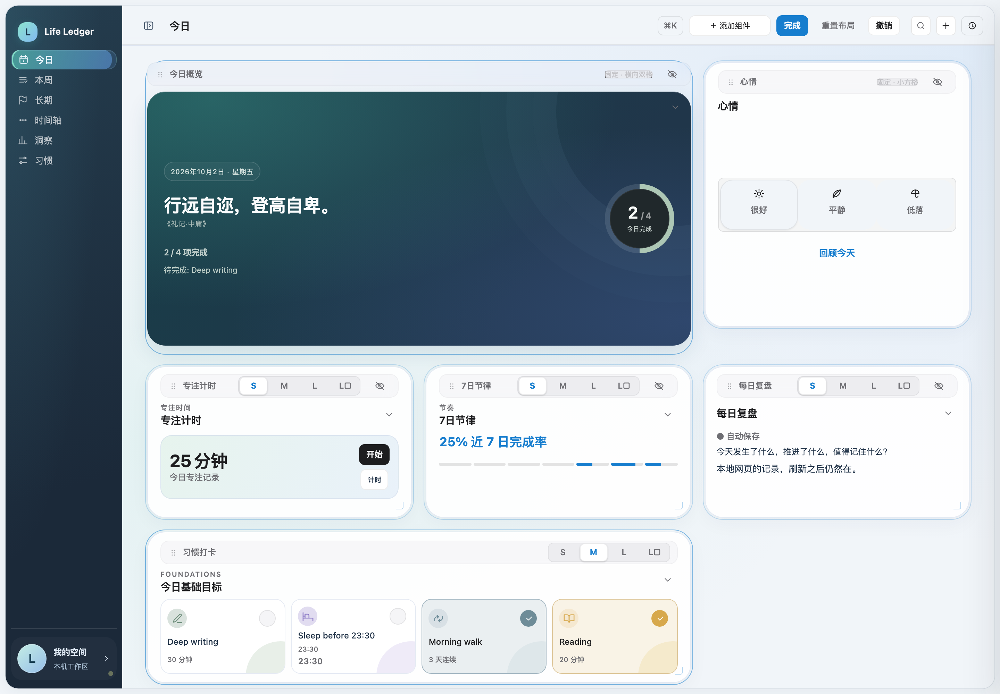
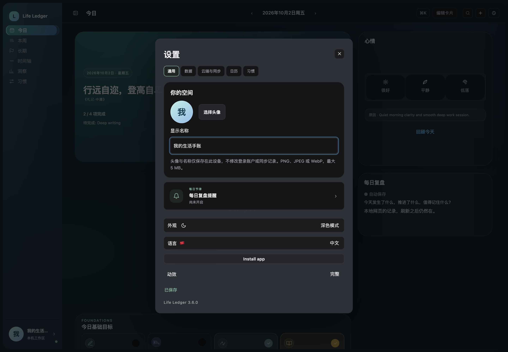
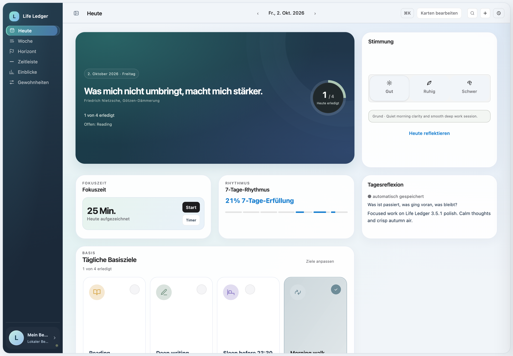
保留手机导航，设置入口可触达；网站不会伪装成 Mac 原生窗口。
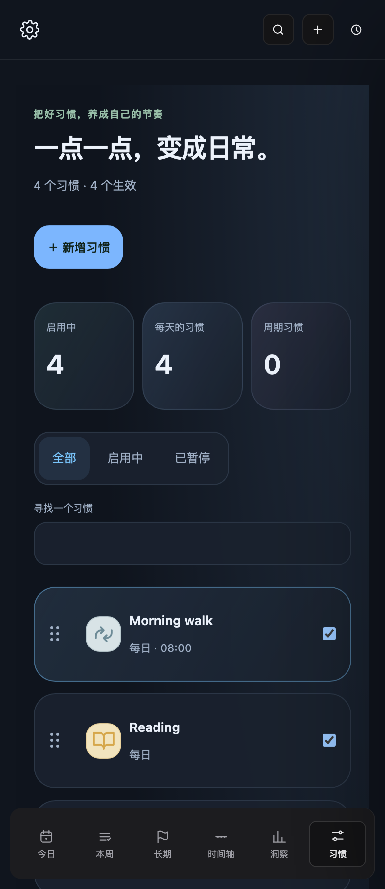